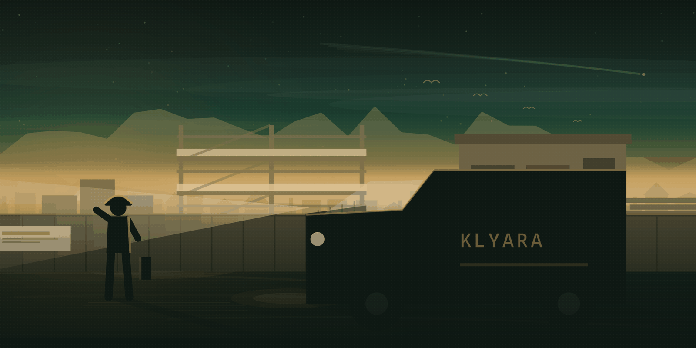
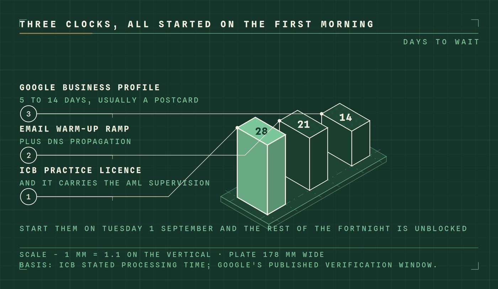
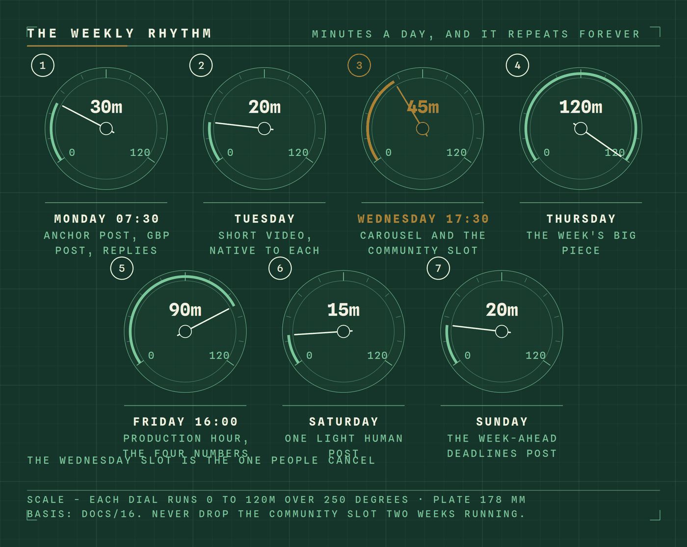
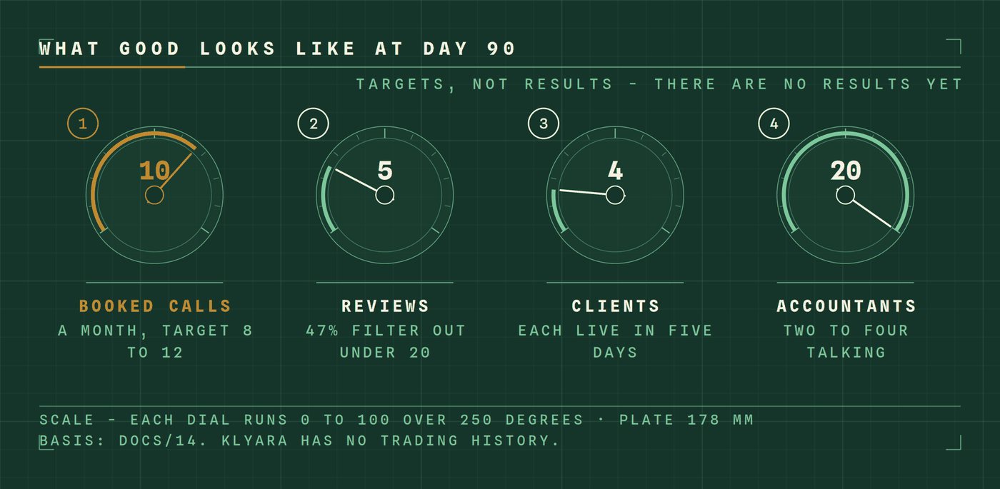

Views
Documents are view and download only — nothing here edits or uploads a file.
Your ticks are saved in this browser only. Not on a server, not shared. Export them from the Tracker.
Ninety days, dated.
Setup runs Tuesday 1 September to Sunday 13 September. Day 1 is Monday 14 September 2026. Day 90 is Saturday 12 December 2026. Each day has one thing on it.
This view renders the day-by-day document as it was delivered. Its dates are right, but some of the prose inside the entries was written against a launch a week earlier and still names deadlines on the wrong day. The corrected, task-level version — with owners, minutes, dependencies, tips, failure modes and fixes, and every correction listed — is in the Tracker.
The whole window
Four phases, seven milestones, and where today sits against them.
Every day
Tap a day to open its tasks. Filled tiles are days that have passed.
Milestones
The dates the rest of the plan keys off.
Hard dates inside the ninety days
Everything marked as a hard deadline in the plan. Where a CIS deadline falls on a weekend or a bank holiday it moves back to the last working day before it, never forward. Day numbers here were seven too high in the delivered document and have been recomputed against Day 1 = Monday 14 September 2026.
Open it, tick it off, watch the counts move.
Every task and subtask across the setup fortnight and the ninety days, with why it matters, the tips, what usually goes wrong and the fix. Owners, minutes and dependencies on every line. Tick as you go; the counts update as you tick.
This week
The week you are in, day by day. Ticked against total.
Where the ticks are
By section, then by week. Every bar counts tasks and subtasks together.
Every day
Tap a day to open its tasks. Tap the chevron on a task for why it matters, the tips, what usually goes wrong and the fix.
The fixed dates
Recomputed against Day 1 = Monday 14 September 2026. A CIS deadline falling on a weekend or a bank holiday moves back to the last working day before it, never forward.
Corrections made to the source plan
The day-by-day source had its dates re-anchored a week later than they were first written, but the prose inside the entries was not moved with them — so deadline copy sat seven days after the deadline it described. Every one of these was fixed while this data was written.
Move your ticks
The state lives in this browser. Export it to move it to another machine, or to send it to Craig by hand until the app is server-backed.
0 ticks in this browser right now.
Said plainly: these ticks are in this browser’s local storage. They are not on a server, they are not shared between the two of you, they do not follow you to your phone, and clearing site data deletes them. The export is the only way to move them. When the portal takes this over, the same JSON is what gets loaded in.
This browser will not save. Private browsing, or site data is blocked. Ticks will work until you reload and then they are gone.
Business plan.
Fourteen sections, read in the browser with every chart in place. The Word and PDF versions are the same document.
Document library.
Everything in the delivery, in the same nine folders as the ZIP. View it here or download the file.
Four things stand between Klyara and trading.
Nothing here is claimed as held. Every item is at the state it is genuinely at today.
Site claims to check against the CAP Code
From the website audit. Each one has to be true today, or future-tensed, or taken down.
What the risk register says about these
Scored likelihood × impact. Anything 15 or over needs a decision this month.
| Risk | L | I | Score | Early warning sign |
|---|---|---|---|---|
| Fabricated testimonials stay live | 4 | 5 | 20 | They are still there. That is the warning sign. |
| AML supervision slips past November | 3 | 5 | 15 | No application submitted by mid-September |
| A published tax figure is wrong | 2 | 4 | 8 | Anything published without checking gov.uk that week |
Quick links.
The accounts the ninety days run on. Sign-in pages open in a new tab.
Files and calendar
The OneDrive link is a placeholder until Craig pastes the real folder URL into this file.
Books and tax
Presence and compliance
These are sign-in pages, not credentials. Nothing on this panel stores a password, a token or a session.
Everything is written. The gate is a licence and five reviews.
Twenty-seven documents, twenty web pages and a full asset set, all built and all checked. What is left is not content. It is one regulatory wait, thirty decisions only you can make, and the habit of asking every client for a review.

01 · Do these five things this week
Four of the five have a waiting period attached, which is the whole reason they come first.
- 01
Take the homepage testimonials down
Five named testimonials on klyara.com are invented. Nothing else on this page matters until they are gone.
Fake reviews are a banned practice under the DMCC Act 2024 and a conduct issue during a licence application. Replacement copy is written and ready in the website audit. Blocking
- 02
Apply for the ICB practice licence
£94 application, then £373–£406 a year, and it includes anti-money-laundering supervision. Stated processing time is 28 days.
Cheaper and faster than registering with HMRC directly, and it comes with a professional body attached. Write the application date on a wall. 28-day wait
- 03
Start Google Business Profile verification
Five to fourteen days. Every local-search result in the plan depends on it, and nothing else is blocked by it.
While you wait, seed the first four Q&A entries — they are written out. An empty Q&A panel eventually gets answered by a stranger. 5–14 day wait
- 04
Publish the pricing page and the tools page
Nineteen pages already link to one or both. Until they are live, those are broken links on your own site.
Of eleven firms surveyed around Guildford, one published a full price list and it was the London one. Publishing yours is the clearest competitive difference you have. Ready now
- 05
Add “founding client rate” to every price you publish
Twenty minutes. It is what makes the 2027 increase a scheduled event instead of a confrontation.
Without it, every client who joins in the next twelve months has an implied permanent price. The modelling says the increase is worth £14,160 a year at twenty clients. Ready now

02 · Thirty decisions only you can make
Seven blocks, about 105 minutes in one sitting. Craig is needed for two of them.
03 · The ninety days
Drawn from the same plan file this panel's tracker uses, so the dates cannot drift apart.


04 · What is in the pack
Counted live from the staged delivery folders, not typed in.
05 · What ships with it
Nothing here was drawn by hand. Every image, video and PDF comes out of a script.
Web
Twenty production pages: five local, twelve guides, the pricing page, a tools page with four working calculators, and the guide index.
- Cross-linked, no orphans, no broken internal links
- 63 JSON-LD blocks, all valid
- Clean at desktop and at 390px
- An Open Graph card on every page
Content
Sixty days of posts written in full, not outlined. Fifty-two Google Business Profile posts, dated. Twenty-four fortnightly newsletters.
- Fourteen vertical videos
- Nine carousels, sixty slides
- Twenty-two pre-written community answers
Print & sales
Twelve PDFs, including the lead magnet, a schedule of services for the engagement letter, and the monthly client report template.
- A3 wall planner, A4 brand sheet
- Trade counter card and review card, each with a QR
- Proposal generator — edit one block, re-run
Numbers
A KPI workbook with 235 formulas, zero errors, every figure hand-checked.
- Twenty-six week tracker, four numbers a week
- Twelve-month pipeline model with partner commission
- Price scenario sheet for the 2027 review
06 · What the checks found
An audit that finds nothing has usually not looked. These are the defects the checks turned up in work already called finished. All fixed.
The check is in the pack
Run tools/audit.py before any publish. It checks date-and-weekday pairs, the day-numbered plans against the launch date,
HTML tag balance, JSON-LD validity, meta lengths, horizontal overflow at 390px, the internal link graph, unresolved placeholders,
brand-token compliance, and whether every asset referenced in the documents actually exists. It should print TOTAL PROBLEMS: 0. It currently does.
Klyara Uni.
How things work here, written down once so nobody has to be asked twice. Written for Key, Craig, and whoever joins next. Guides open in a new tab.
Build and technology
How the software is put together, what it costs, and why it was chosen that way.
Coming next
The gaps worth filling first. Each becomes a page in here when it is written.
Where it lives, and how to add to it
Two copies, same files:
- One folder only —
05_Website\uni\, published atklyara.com/uni, which is what these links open. Double-click a guide there and it opens; nothing needs to be running.
Add the file to 05_Website\uni\, add a card to index.html,
then commit and push. Live in about a minute. The old second copy in 11_Uni and its sync-to-website.cmd were removed on 27 August 2026.
Self-contained HTML is the format — one file, no build step, opens anywhere, still readable in ten years.
Nothing sensitive goes in the Uni. Every file in the website repository is served publicly —
klyara.com/uni/<filename> works for anyone who guesses it. These pages are noindex and
excluded in robots.txt, so search engines leave them alone, but that is obscurity, not access control.
No passwords, no client data, no identity documents, no bank details.